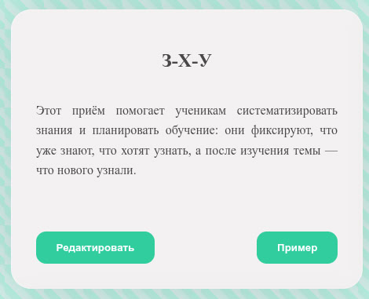
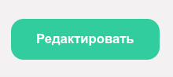
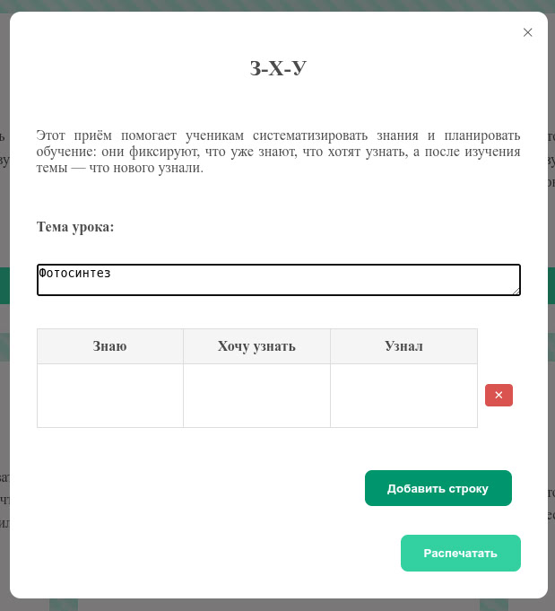
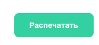
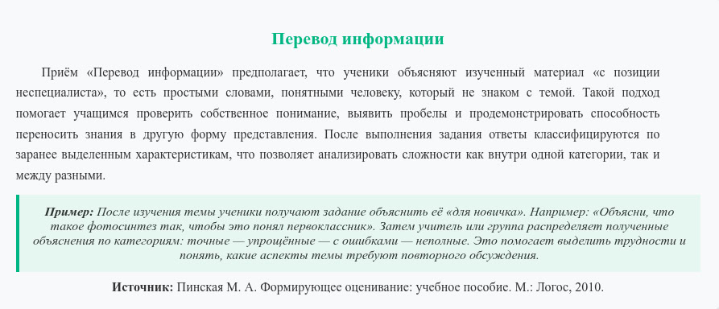

Инструкция
Перейти на страницу «Шаблоны» можно, нажав на одноимённый пункт в верхней панели сайта.
Выберите среди представленных на сайте приёмов формирующего оценивания понравившийся вам вариант, например приём «З-Х-У».
Нажмите кнопку «Редактировать» в карточке приёма формирующего оценивания, чтобы начать взаимодействие с шаблоном.
Заполните необходимые поля формы.
Для печати заполненного шаблона нажмите кнопку «Распечатать».
В появившемся окне запустите печать документа или сохраните его. Обратите внимание, что внешний вид окна может различаться в зависимости от используемого программного обеспечения.

Для перехода на страницу «Приёмы» нажмите на одноимённый пункт в шапке сайта.
Здесь вы можете ознакомиться с приёмами формирующего оценивания в удобном формате: указано название приёма, его описание, пример использования и ссылка на источник (в виде гиперссылки или текстового описания).
